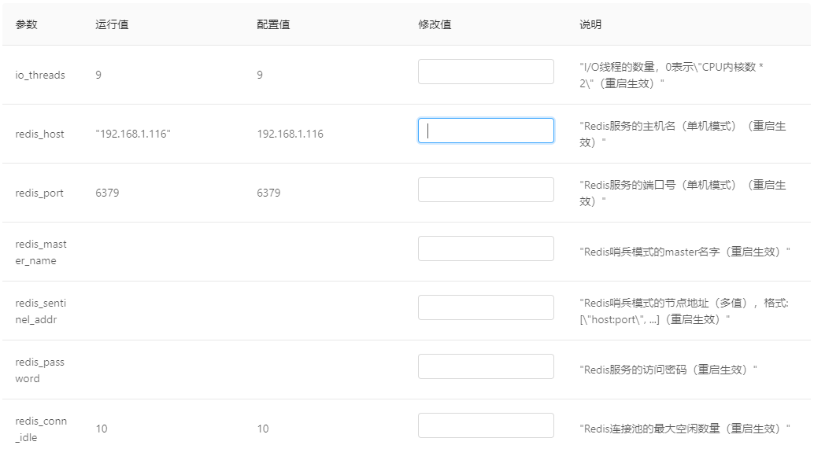

运行环境部署
在前面的章节中，我们介绍了如何在一个"简单"的没有"注册中心"的环境下，如何部署服务容器及微服务，但是在真正的运行环境中，UBSI建议应该采用部署"注册中心"的方案。在"注册中心"环境下，UBSI的服务动态发现、动态路由、负载分配/容错/恢复等机制才能发挥作用，能够支持服务能力的动态扩展，以适应业务规模的动态变化。
出于对性能、可靠性以及降低系统复杂度（尽量减少依赖）等方面的考虑，UBSI选择redis作为"注册中心"。部署一个redis节点的步骤如下：（以docker为例）
docker pull redis
docker run --name redis -p 6379:6379 -d redis
如果希望保证redis的高可用，可以部署redis多节点群集模式。更多关于redis部署及配置的说明请自行参见相关文档。
有了redis环境，还需要配置UBSI Consumer组件，使其能够访问redis server，并将其作为"注册中心"（需要注意，UBSI的服务容器也是通过Consumer组件来访问redis以完成服务注册）。配置Consumer组件可以有如下方式：
手工方式
在UBSI Container或者WebApp（UBSI Consumer应用）的运行目录下，手工创建rewin.ubsi.consumer.json，内容如下：
{
"io_threads": 4,
"timeout_connect": 5,
"timeout_request": 10,
"timeout_reconnect": 600,
"redis_host": "{redis-server-host}",
"redis_port": 6379,
"redis_conn_idle": 8,
"redis_conn_max": 128,
}
其中：
io_thread
Consumer组件用来处理socket I/O的线程数，0表示默认设置
timeout_connect
向服务容器发起socket连接时的缺省超时时间，秒数
timeout_request
服务请求的缺省超时时间，秒数
timeout_reconnect
发现容器/redis服务节点失效后，再次重试的时间间隔，秒数
redis_host
redis服务的地址
redis_port
redis的服务端口
redis_conn_idle
redis连接池的最大空闲数量
redis_conn_max
redis连接池的最大数量
注意：上面的配置是针对redis单节点模式，如果部署了多节点的"哨兵"模式，需要设置redis_master_name和redis_sentinel_addr
如果是服务容器，还需要手工配置rewin.ubsi.container.json，正确设置容器的访问地址，例如：
{
"host": "{container-host}",
"port": 7112,
"backlog": 128,
"io_threads": 4,
"work_threads": 10,
"overload": 100,
"forward": 0
}
Web管理器
UBSI Web管理器提供了Consumer组件的配置工具，通常情况下，Web管理器是通过"注册中心"来发现服务容器以及WebApp的运行实例的，如果这些实例还未配置redis，意味着它们无法在"注册中心"中注册自己，Web管理器也就无法自动发现它们，这时候需要利用Web管理器的"手工发现"机制，将服务容器/WebApp的"访问地址"手工加入到Web管理器中，然后就可以通过"配置管理"功能完成这些实例的配置工作了。

不管是通过手工还是Web管理器完成了Consumer的配置，都需要将运行实例进行重新启动（Web管理器可以"在线"重启服务容器），重启后的运行实例可以通过"注册中心"完成如下的动作：
服务容器
- 定时将自己的运行地址、加载的服务实例以及请求计数等数据刷新到redis
- 定时广播活动心跳及负载情况
- 当服务状态发生变化（暂停/关闭/启动）或服务实例发生变化（安装/卸载）时，发出广播通知
Consumer组件
- 加载已经注册的容器及其服务实例
- 接收广播消息，及时更新容器及其服务的运行状态等信息
通过这些机制，Consumer组件可以"维护"一张容器及服务实例的动态路由表，当发生服务请求时，就可以根据服务声明、容器的健康状态以及负载情况进行动态路由计算，选择合适的容器节点发送服务请求。路由算法的基础原则是：当某个服务在多个容器上有可用实例时，"响应"能力越强的容器拥有越高的"选中"概率。